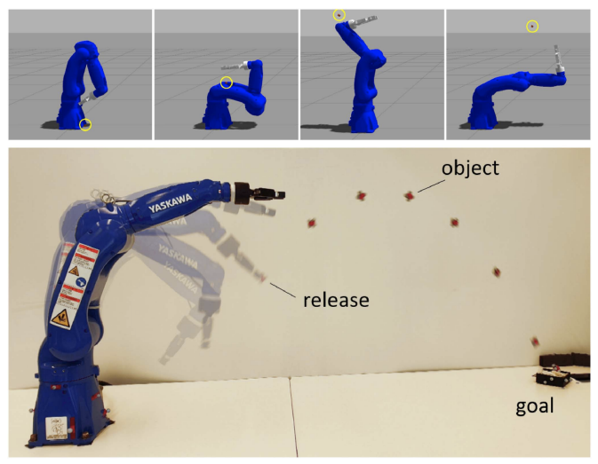
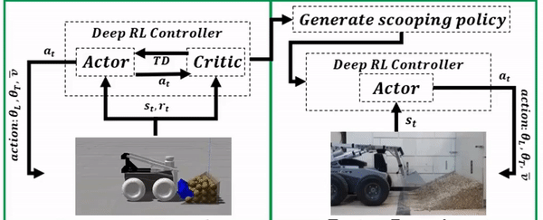

|
Osher Azulay I’m a passionate roboticist pursuing my PhD studies at the ROB-TAU Robotics Lab within the MechEng Dept. at Tel-Aviv University. My research centers primarily on understanding how robots learn to sense their environment, with a focus on robotic manipulations, intelligent decision-making, and tactile sensing. Find my latest work here, feel free to contact me for any questions! |
{kind=link}

|
Visuotactile-Based Learning for Insertion with Compliant Hands
Osher Azulay, Dhruv Metha Ramesh, Nimrod Curtis and Avishai Sintov. Preprint. paper / code Sim2real learning of robust precision insertion polices with compliant hands. |

|
Augmenting Tactile Simulators with Real-like and Zero-Shot Capabilities
Osher Azulay*, Alon Mizrahi*, Nimrod Curtis* and Avishai Sintov. ICRA 2024. paper / code Tackling the sim-to-real problem for high resolution 3D round sensors using bi-directional Generative Adversarial Networks. |

|
AllSight: A Low-Cost and High-Resolution Round Tactile Sensor with Zero-Shot Learning Capability
Osher Azulay, Nimrod Curtis, Rotem Sokolovsky, Guy Levitski, Daniel Slomovik, Guy Lilling and Avishai Sintov. IEEE RA-L & ICRA, 2024. paper / video / code Introducing AllSight, an optical tactile sensor with a round 3D structure designed for robotic inhand manipulation tasks |

|
Haptic-Based and SE(3)-Aware Object Insertion Using Compliant Hands
Osher Azulay, Max Monastirsky and Avishai Sintov. IEEE RA-L & ICRA, 2023. paper / video Exploring complaint hands characteristics for object insertion using haptic-based residual RL. |
|  |
Learning to Throw With a Handful of Samples Using Decision Transformers
Max Monastirsky, Osher Azulay and Avishai Sintov. IEEE RA-L & IROS, 2023. paper / video Exploring the use of Decision Transformers for throwing and their ability for sim2real policy transfer. |

|
Learning Haptic-based Object Pose Estimation for In-hand Manipulation Control with Underactuated Robotic Hands
Osher Azulay, Inbar Meir and Avishai Sintov. IEEE Transactions on Haptics, 2022. paper / video / code In-hand object pose estimation and manipulation using Model Predictive Control. |

|
Open-Sourcing Generative Models for Data-driven Robot Simulations
Eran Bamani, Osher Azulay, Anton Gurevich, and Avishai Sintov. Data-Centric AI workshop, NeurIPS, 2021 paper / oral Exploring the possibility of investing the recorded data in a generative model rather than directly to a regression model for real-robot applications. |
|  |
Wheel Loader Scooping Controller Using Deep Reinforcement Learning
Osher Azulay and Amir Shapiro. IEEE Access, 2021 paper / video / code A deep reinforcement learning-based controller for an unmanned ground vehicle with a custom-built scooping mechanism. |
Talks, Honor &
|
|
|
Template from source code. |